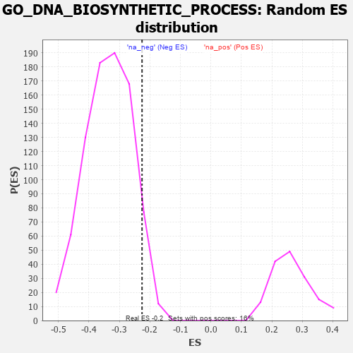

| | | Dataset | 7d |
| Phenotype | NoPhenotypeAvailable |
| Upregulated in class | na_neg |
| GeneSet | GO_DNA_BIOSYNTHETIC_PROCESS |
| Enrichment Score (ES) | -0.22586359 |
| Normalized Enrichment Score (NES) | -0.67264915 |
| Nominal p-value | 0.9453032 |
| FDR q-value | 1.0 |
| FWER p-Value | 1.0 |
Table: GSEA Results Summary
 Fig 1: Enrichment plot: GO_DNA_BIOSYNTHETIC_PROCESS
Fig 1: Enrichment plot: GO_DNA_BIOSYNTHETIC_PROCESS
Profile of the Running ES Score & Positions of GeneSet Members on the Rank Ordered List
| PROBE | GENE SYMBOL | GENE_TITLE | RANK IN GENE LIST | RANK METRIC SCORE | RUNNING ES | CORE ENRICHMENT | | 1 | HGF | | | 276 | 0.870 | -0.0028 | No |
| 2 | WRN | | | 469 | 0.649 | -0.0032 | No |
| 3 | RFC2 | | | 488 | 0.635 | 0.0179 | No |
| 4 | PARN | | | 660 | 0.572 | 0.0173 | No |
| 5 | RFC3 | | | 663 | 0.571 | 0.0381 | No |
| 6 | MRE11 | | | 693 | 0.560 | 0.0551 | No |
| 7 | GAR1 | | | 806 | 0.530 | 0.0604 | No |
| 8 | RFC4 | | | 815 | 0.528 | 0.0788 | No |
| 9 | RPA1 | | | 817 | 0.527 | 0.0981 | No |
| 10 | RPA2 | | | 851 | 0.519 | 0.1130 | No |
| 11 | NHP2 | | | 906 | 0.505 | 0.1248 | No |
| 12 | MEN1 | | | 1003 | 0.483 | 0.1304 | No |
| 13 | TELO2 | | | 1006 | 0.482 | 0.1479 | No |
| 14 | SRC | | | 1128 | 0.459 | 0.1495 | No |
| 15 | TFDP1 | | | 1180 | 0.450 | 0.1596 | No |
| 16 | DKC1 | | | 1292 | 0.431 | 0.1614 | No |
| 17 | DACH1 | | | 1471 | 0.395 | 0.1535 | No |
| 18 | PAK3 | | | 1889 | 0.322 | 0.1126 | No |
| 19 | POLH | | | 1983 | 0.307 | 0.1122 | No |
| 20 | DTL | | | 2154 | 0.284 | 0.1012 | No |
| 21 | PPIA | | | 2754 | 0.190 | 0.0325 | No |
| 22 | XRN1 | | | 2786 | 0.185 | 0.0354 | No |
| 23 | ATR | | | 2800 | 0.183 | 0.0405 | No |
| 24 | REV1 | | | 3104 | 0.136 | 0.0072 | No |
| 25 | SMG5 | | | 3285 | 0.108 | -0.0116 | No |
| 26 | RFC5 | | | 3389 | 0.091 | -0.0212 | No |
| 27 | RFC1 | | | 3437 | 0.085 | -0.0240 | No |
| 28 | NOP10 | | | 3573 | 0.064 | -0.0387 | No |
| 29 | MAPK3 | | | 3589 | 0.062 | -0.0383 | No |
| 30 | SPRTN | | | 3651 | 0.051 | -0.0442 | No |
| 31 | NEK2 | | | 3871 | 0.016 | -0.0712 | No |
| 32 | PINX1 | | | 4515 | -0.097 | -0.1489 | No |
| 33 | PNKP | | | 4572 | -0.111 | -0.1519 | No |
| 34 | TERT | | | 4801 | -0.157 | -0.1750 | No |
| 35 | XRCC5 | | | 4946 | -0.187 | -0.1863 | No |
| 36 | KLF4 | | | 5005 | -0.198 | -0.1863 | No |
| 37 | REV3L | | | 5051 | -0.209 | -0.1843 | No |
| 38 | ATM | | | 5210 | -0.249 | -0.1951 | No |
| 39 | TNKS2 | | | 5239 | -0.254 | -0.1893 | No |
| 40 | RAD50 | | | 5314 | -0.276 | -0.1885 | No |
| 41 | CERS1 | | | 5518 | -0.325 | -0.2022 | No |
| 42 | NVL | | | 5572 | -0.338 | -0.1964 | No |
| 43 | SPHK1 | | | 5576 | -0.339 | -0.1843 | No |
| 44 | LIN9 | | | 5904 | -0.437 | -0.2096 | Yes |
| 45 | SH2B1 | | | 5963 | -0.459 | -0.2000 | Yes |
| 46 | POLK | | | 6041 | -0.486 | -0.1918 | Yes |
| 47 | UBB | | | 6090 | -0.503 | -0.1794 | Yes |
| 48 | TNKS | | | 6138 | -0.516 | -0.1664 | Yes |
| 49 | RGN | | | 6233 | -0.547 | -0.1581 | Yes |
| 50 | ISG15 | | | 6385 | -0.608 | -0.1548 | Yes |
| 51 | PIF1 | | | 6604 | -0.713 | -0.1561 | Yes |
| 52 | UFD1 | | | 7157 | -1.040 | -0.1876 | Yes |
| 53 | TEP1 | | | 7284 | -1.155 | -0.1610 | Yes |
| 54 | PARP3 | | | 7289 | -1.158 | -0.1189 | Yes |
| 55 | SYCP1 | | | 7295 | -1.167 | -0.0766 | Yes |
| 56 | UBC | | | 7410 | -1.274 | -0.0441 | Yes |
| 57 | NEK7 | | | 7415 | -1.285 | 0.0027 | Yes |
| 58 | DCP2 | | | 7724 | -1.833 | 0.0312 | Yes |
Table: GSEA details [plain text format]

Fig 2: GO_DNA_BIOSYNTHETIC_PROCESS: Random ES distribution
Gene set null distribution of ES for GO_DNA_BIOSYNTHETIC_PROCESS